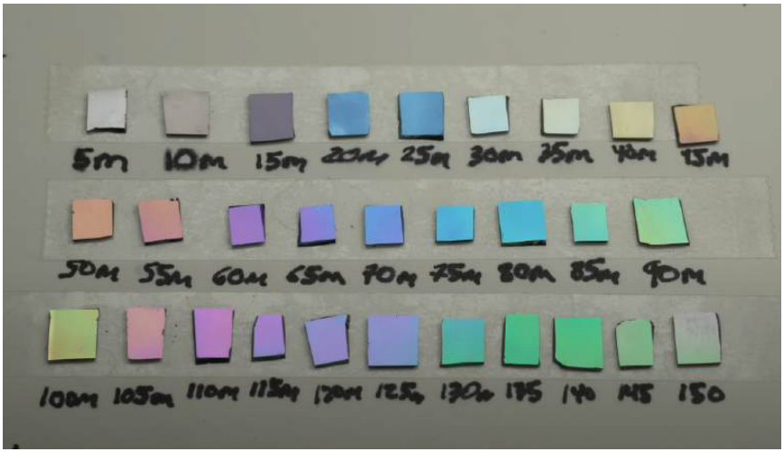
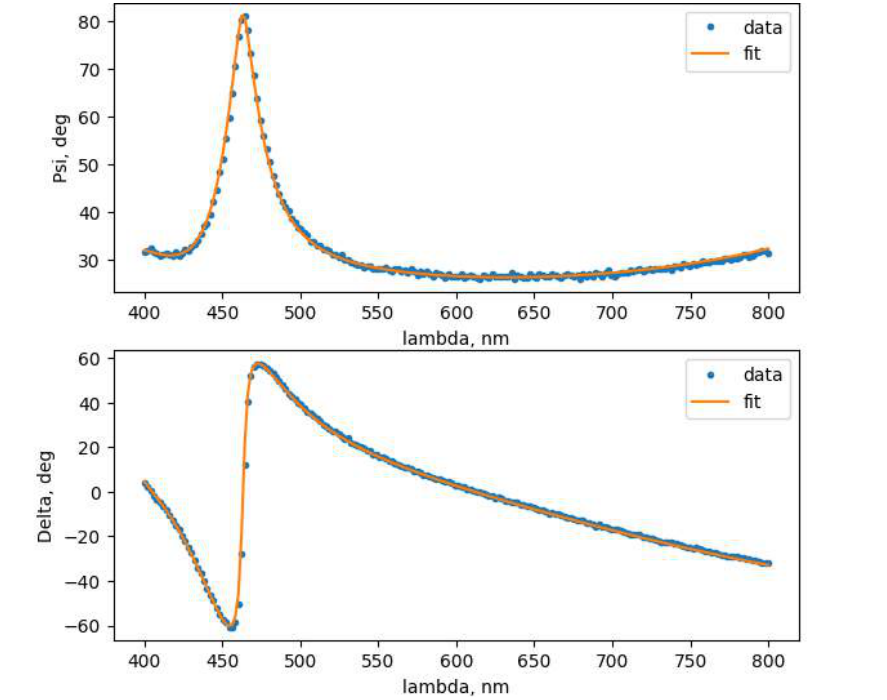
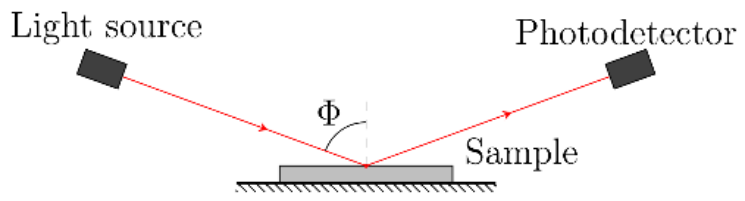
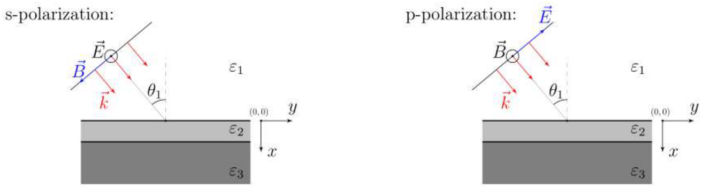
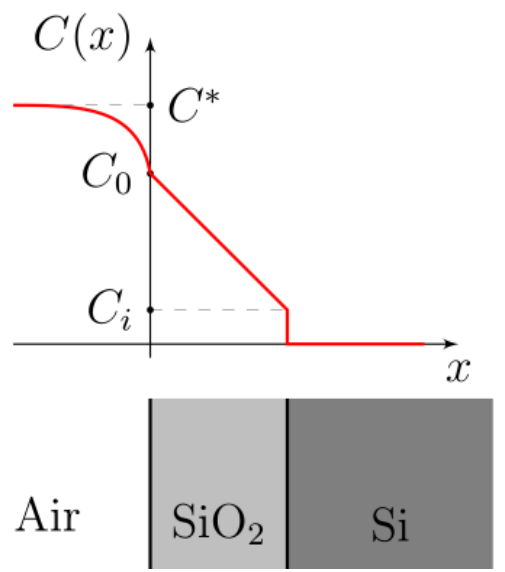
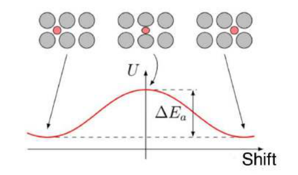

열 산화(thermal oxidation)는 고온에서 실리콘 Si 표면에 매우 얇은(수십 ∼ 수백 나노미터) 이산화 규소(silicon dioxide) $\mathrm{SiO_2}$ 막을 형성하는 공정이다. 이 기술은 현대 전자공학의 기반이 되는 집적 회로(integrated circuit)와 MOSFET(metal-oxide-semiconductor)의 제조 공정에서 필수적인 부분이다. 실리콘 Si를 산소가 있는 환경에 두면 $\mathrm{Si + O_2 \to SiO_2}$의 산화 과정이 시작된다. 결정질 실리콘과 충분히 두꺼운(10 nm 이상부터) 평탄한 산화막을 기술하는 데에는 Dill-Grove 모형(1965)이 잘 들어맞지만, 다른 조건에서의 성장 메커니즘에 대한 상세한 기술은 아직 해결되지 않은 과학적 문제로 남아 있다.
실리콘은 가시광선에 불투명한 반면, 그 이산화물은 투명하다. 이러한 광학적 성질과 더불어 이산화물 막의 두께가 수십 나노미터라는 사실은 $\mathrm{SiO_2}$ 층의 두께를 매우 정밀하게 광학적으로 제어할 수 있는 이상적인 조건을 만들어 준다.

우리는 박막의 광학적 성질을 연구하는 강력한 기법인 엘립소미트리(ellipsometry, 타원편광분석법)를 이용해 막 성장을 조사할 것이다. 이 기법은 막 표면에서 반사되는 s-편광파와 p-편광파(독일어 “senkrecht”—수직, “parallel”—평행)의 반사 진폭 계수를 비교하는 데 기반을 둔다. 측정 결과는 엘립소미트리 각(ellipsometric angle) $\Psi$, $\Delta$로 표현된다:
\[\frac{r_p}{r_s} = \tan\Psi\cdot e^{i\Delta},\]여기서 $\Psi$ 값은 p-편광파와 s-편광파가 반사될 때의 진폭 비에 대응하고, $\Delta$ 값은 둘 사이의 위상차에 대응한다.
엘립소미트리는 서로 다른 편광을 가진 파 사이의 상대적 차이(진폭 비와 위상차)를 정밀하게 측정하므로, 복사원의 출력이나 수신기의 감도에서 발생하는 다양한 변동에 매우 강하다. 또한 엘립소미트리는 시료와의 직접적인 기계적 접촉 없이 시료의 특성을 측정할 수 있게 하여, 실시간으로 그리고 in situ(라틴어—“그 자리에서”, 직접) 측정을 수행할 수 있다.
문제 전체에서 입사파의 파장은 $\lambda$로 표시한다. 광학 영역에서 물질들은 유의미한 자기적 성질을 갖지 않으므로, 고려하는 모든 물질에 대해 $\mu = 1$로 둔다.


주의! 보고서에 첨부할 파일은 “report” 폴더에 넣으시오.
주의! 파트 B로 넘어가려면 A.7만 수행하면 충분하다.
비자성 유전체에서 맥스웰 방정식(Maxwell’s equations)은 다음과 같은 형태를 갖는다:
\[\operatorname{div}\vec D = 0 \qquad \operatorname{rot}\vec E = -\frac{\partial\vec B}{\partial t}\] \[\operatorname{div}\vec B = 0 \qquad \operatorname{rot}\vec B = \mu_0\frac{\partial\vec D}{\partial t}\]유전체에 대해:
\[\vec D = \varepsilon_0\varepsilon\vec E\]이 방정식들로부터, 유전체-유전체 경계에서 벡터 $\vec D$와 $\vec B$의 법선 성분과 벡터 $\vec E$, $\vec B$의 표면 방향 성분이 변하지 않음이 따라 나온다.
평면파에서 파동 벡터(wave vector), 전기장 벡터, 자기장 벡터 $\vec k$, $\vec E$, $\vec B$는 서로 수직이며 오른손 방향으로 배향된다. 또한 다음 관계가 성립한다:
\[\vec B = \frac{1}{\omega}[\vec k\times\vec E], \qquad |\vec k| = \sqrt{\varepsilon}\,\omega/c\]여기서 $\omega$는 파의 진동수이다. 빛의 속력은 $c = 1/\sqrt{\varepsilon_0\mu_0}$이다. 이 문제의 일부로서, 우리는 평면파와 층상 구조(layered structure)의 상호작용을 고려하고 그러한 계를 이론적으로 기술하기 위한 일반적인 접근법을 개발할 것이다. 두께 $d$이고 유전율 $\varepsilon_2$인 물질로 만들어진 막이, 유전율 $\varepsilon_1$과 $\varepsilon_3$인 두 반무한 유전체 사이에 위치한다고 하자.

입사파가 막에 떨어지면, 매질 $\varepsilon_1$에서 반사파가, 매질 $\varepsilon_3$에서 투과파가, 그리고 매질 $\varepsilon_2$에서 서로 다른 방향으로 진행하는 파들의 중첩이 발생한다. s-편광에서는 전기장의 방향이 고정되어 있으므로, 스칼라 복소 진폭으로 다룰 수 있다:
\[\begin{cases} \tilde E_1 = \mathcal{E}\,e^{ik_{1x}x+ik_{1y}y} + r\cdot\mathcal{E}\,e^{-ik_{1x}x+ik_{1y}y}\\ \tilde E_2 = a\cdot\mathcal{E}\,e^{ik_{2x}x+ik_{2y}y} + b\cdot\mathcal{E}\,e^{-ik_{2x}x+ik_{2y}y}\\ \tilde E_3 = t\cdot\mathcal{E}\,e^{ik_{3x}(x-d)+ik_{3y}y} \end{cases}\]p-편광에서는 자기장의 방향이 고정되어 있으므로, 자기장의 스칼라 복소 진폭을 다루는 것이 더 쉽다:
\[\begin{cases} \tilde B_1 = \mathcal{B}\,e^{ik_{1x}x+ik_{1y}y} + r\cdot\mathcal{B}\,e^{-ik_{1x}x+ik_{1y}y}\\ \tilde B_2 = a\cdot\mathcal{B}\,e^{ik_{2x}x+ik_{2y}y} + b\cdot\mathcal{B}\,e^{-ik_{2x}x+ik_{2y}y}\\ \tilde B_3 = t\cdot\mathcal{B}\,e^{ik_{3x}(x-d)+ik_{3y}y} \end{cases}\]우리는 실리콘 기판 위 이산화 규소 박막의 엘립소미트리 스펙트럼의 대략적인 형태를 사전 계산할 것이다. 파트 A의 끝까지 광학적 분산(optical dispersion)을 무시하고, $\varepsilon_{\mathrm{Air}} = 1.00$, $\varepsilon_{\mathrm{Si}} = 17.2 - 0.430i$, $\varepsilon_{\mathrm{SiO_2}} = 2.13$으로 둔다. 실리콘은 흡수에 책임이 있는 유전 상수의 허수부를 가지며, 이로 인해 불투명함에 유의하라. 복소 삼각함수를 복소 매개변수에 대해 고려한다면, 복소 유전율을 사용하더라도 얻어진 표현은 변하지 않는다.
A.py 프로그램을 이용하면 서로 다른 입사각 $\theta_1$과 두께 $d$에 대해 $\Psi$와 $\Delta$를 그릴 수 있다. 이 프로그램은 입력으로 계열의 이름 Name, 공기 중에서의 입사각 $\theta_1$(도 단위), 이산화물 막의 두께 $d$를 파일 A_in.txt에 기록된 표 형태로 받는다. 표를 채우는 예시는 파일 A_in.txt에 있다:
| Name | $\theta_1,{}^\circ$ | $d$, nm |
|---|---|---|
| ex1 | 50 | 40 |
| ex2 | 30 | 100 |
| $\vdots$ | $\vdots$ | $\vdots$ |
입력 데이터는 $20^\circ \le \theta_1 \le 80^\circ$, $d \le 250\,\mathrm{nm}$로 제한된다. 실험의 이름에는 공백과 탭이 포함되어서는 안 된다. 수의 정수부와 소수부 사이의 구분자는 점이다. 열 사이의 구분자는 탭이다.
B.3부터는 정확도를 높이기 위해 $\theta_{\mathrm{opt}}$를 $\Phi$로 사용하시오.
이 파트에서 막에 대한 빔의 입사각은 $\Phi$로 표시한다.
동료와 함께, 당신은 건조한 공기 중에서 장시간 가열할 때 실리콘 표면 위에 박막 산화물이 증착되는 것을 연구하고 있다. 실제 실리콘 Si와 이산화 규소 $\mathrm{SiO_2}$는 광학적 분산을 가지므로, 이 파트에서 당신에게 제공될 $\lambda$에 대한 $\Psi$, $\Delta$ 그래프는 파트 A.7에서 당신이 그린 것과 약간 다를 수 있다.
주의! Si와 $\mathrm{SiO_2}$의 광학적 분산은 이 파트에서 당신이 다룰 모든 프로그램에 자동으로 내장되어 있다.
당신의 동료는 어제 엘립소미터에서 늦게까지 작업하다가 각 $\Phi$의 값을 기록하는 것을 잊어버렸다. 그는 두 시료에서 산화막의 두께를 측정하였고, 그 측정 결과를 파일 B1.txt와 B2.txt로 당신에게 전달하였다.
산화 속도의 상세한 연구를 위해, 당신은 실시간으로 산화되는 실리콘 기판에서 측정된 엘립소미트리 데이터를 동료로부터 얻을 수 있다. 초기 시각 $t = 0$에 그는 순수한 실리콘을 온도 $T$의 가열로 안에 넣고, 당신이 알려준 고정된 각 $\Phi$에서 2분마다 $\lambda$에 따른 $\Psi$, $\Delta$ 스펙트럼을 측정한다.
파일 B_in.txt에 당신은 실험의 이름, 각 $\Phi$(도 단위), 온도 $T$(섭씨 단위), 실험의 지속 시간(분 단위)을 표 형태로 지정한다:
| Name | $\Phi,{}^\circ$ | $T,{}^\circ\mathrm{C}$ | $t$, min |
|---|---|---|---|
| test | 50 | 1000 | 40 |
| $\vdots$ | $\vdots$ | $\vdots$ | $\vdots$ |
입력 데이터는 $20^\circ \le \Phi \le 80^\circ$, $800\,{}^\circ\mathrm{C} \le T \le 1200\,{}^\circ\mathrm{C}$, $t \le 200\,\mathrm{min}$으로 제한된다. 실험의 이름에는 공백과 탭이 포함되어서는 안 된다. 수의 정수부와 소수부 사이의 구분자는 점이고, 열 사이의 구분자는 탭이다. 다음으로 당신은 동료가 가속 모드로 실험을 수행하는 것을 모사하는 프로그램 gen_data.exe를 실행한다. 당신은 언제든지 이 프로그램의 실행을 중단할 수 있으며, 이미 수행된 측정 결과는 컴퓨터에 저장된다. 같은 파일 B_in.txt를 사용하는 프로그램 B.py로 측정 데이터를 자동으로 처리할 수 있다. 이 프로그램은 gen_data.exe의 작업 결과를 사용하여 각 점에 대한 $d$의 값을 선택하고 그 값의 통계적 오차를 계산한다. 처리에 수 분이 걸릴 수 있음에 유의하라. 프로그램 B.py의 결과는 표와 $d(t)$ 그래프 형태로 /res 폴더에 위치한다. /res 폴더에 프로그램 B.py가 자동으로 생성한 표의 예시:
| $t$, min | $d$, nm | $\Delta d$, nm |
|---|---|---|
| 2 | 17.3 | 0.3 |
| $\vdots$ | $\vdots$ | $\vdots$ |
이제 열 산화의 이론적 측면을 고려하자. Deal-Grove 모형에 따르면, 실리콘 산화층의 두께 증가 속도에 다음 세 가지 과정이 책임을 진다:
따라서 산소의 농도 $C$(차원 $\mathrm{mol/m^3}$)는 시료 깊숙이 들어갈수록 변한다. 공기 중 기판으로부터 멀리 떨어진 곳에서 산소 농도는 $C^*$이고, 이산화 규소 층 내부에서는 농도가 $C_0$에서 $C_i$로 선형적으로 감소하며, 실리콘 내부에서 산소 농도는 0이다.

이 과정들을 기술하는 모형을 고려하자. 세 과정 각각의 비(즉 단위 표면적당) 유속 $F_1$, $F_2$, $F_3$(측정 단위—$\mathrm{mol/(s\cdot m^2)}$)을 다음과 같이 정의한다:
실험에 따르면 공기로 불어주는 것(표면 위의 프로파일 $C(x)$를 바꾸는 것)은 과정의 속도를 바꾸지 않는다. 따라서 우리는 $h \gg k$로 간주할 것이다.
산화 과정의 초기에는 정상 모형이 적용되지 않으므로, 최소 두께 $d_0 = 25\,\mathrm{nm}$부터 사용한다. 프로그램 B7.py에 파일 B_in.txt의 데이터를 입력하면 매개변수 $B$와 $B/A$를 자동으로 얻는다. 실험에서 얻은 최대 막 두께가 $d_0$보다 작으면, 프로그램 B7.py는 “Final layer is too thin to approximate”를 출력한다.
프로그램이 오류 “FileNotFoundError”를 반환하면, 필요한 입력 데이터를 미리 B_in.txt에 입력한 후 파일 gen_data.exe와 B.py를 순차적으로 실행하시오.
| $T,{}^\circ\mathrm{C}$ | $B$, $\mathrm{nm^2/min}$ | $\Delta B$, $\mathrm{nm^2/min}$ | $B/A$, nm/min | $\Delta(B/A)$, nm/min |
|---|---|---|---|---|
| 1000 | 174 | 4 | 1.21 | 0.02 |
| $\vdots$ | $\vdots$ | $\vdots$ | $\vdots$ | $\vdots$ |
반응 속도 상수 $k$의 온도 $T$에 대한 의존성은 실리콘 결정에서 Si−Si 결합을 끊는 에너지 $\Delta E_b$와 관련되며, 둘 사이의 관계는 다음과 같다:
\[k \propto e^{-\Delta E_b/k_BT}.\]고체에서의 확산 계수 또한 이른바 활성화 에너지(activation energy) $\Delta E_a$를 통해 온도와 관련되며, 정량적 의존성은 다음 형태를 갖는다:
\[D \propto e^{-\Delta E_a/k_BT}\]
프로그램 B8.py를 이용하면 $1/T$에 대한 $\ln(B\cdot\mathrm{min/nm^2})$와 $1/T$에 대한 $\ln(B/A\cdot\mathrm{min/nm})$ 그래프를 그리고, 자동으로 그려진 직선의 매개변수를 결정할 수 있다.
볼츠만 상수 $k_B = 1.38\cdot10^{-23}\,\mathrm{J/K}$, 기본 전하 $e = 1.60\cdot10^{-19}\,\mathrm{C}$.